에너지관리기사 (2014-09-20 기출문제)
1과목: 연소공학
1. 기체 연료의 저장방식이 아닌 것은?
- 유수식
- 고압식
- 가열식
- 무수식
(정답률: 83%)

2. 보일러의 급수 및 발생증기의 엔탈피를 각각 150,670kcal/kg 이라고 할 때 20000 kg/h 의 증기를 얻으려면 공급열량은 약 몇 kcal/h 인가?
- 9.6×106
- 10.4×106
- 11.7×106
- 12.2×106
(정답률: 69%)
3. 일산화탄소 1Sm3을 완전 연소시키는데 필요한 이론공기량(Sm3)은?
- 2.38
- 2.67
- 4.31
- 4.76
(정답률: 66%)
4. 고로가스의 주요 가연분은?
- 수소
- 탄소
- 탄화수소
- 일산화탄소
(정답률: 46%)
5. 제조 기체연료에 포함된 성분이 아닌 것은?
- C
- H2
- CH4
- N2
(정답률: 60%)
6. 로트에서 고체연료 시료채취방법이 아닌 것은?
- 이단 시료 채취
- 계통 시료 채취
- 층별 시료 채취
- 계단 시료 채취
(정답률: 67%)
7. 다음 기체 중 폭발범위가 가장 넓은 것은?
- 수소
- 메탄
- 프로판
- 벤젠
(정답률: 91%)
8. 어느 기체 혼합물을 10kPa, 20℃, 0.2m3인 초기상태로부터 0.1m3으로 실린더 내에서 가역단열압축할 때 최종상태의 온도는 약 몇 K인가? (단, 이 혼합 가스의 정적비열은 0.7157kJ/kgK, 기체상수는 0.2695kJ/kg 이다.)
- 381
- 387
- 397
- 400
(정답률: 37%)
9. 질량비로 프로판 45%, 공기 55%인 혼합가스가 있다. 프로판 가스의 발열량이 100MJ/m3일 때 혼합가스의 발열량은 몇 MJ/m3인가?
- 29
- 31
- 33
- 35
(정답률: 29%)
10. 다음 조성의 액체연료를 완전 연소시키기 위해 필요한 이론공기량은 약 몇 Sm3/kg인가?
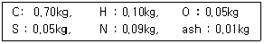
- 8.9
- 11.5
- 15.7
- 18.9
(정답률: 59%)
11. 고위발열량이 9000kcal/kg 인 연료 3kg 이 연소할 때의 총저위발열량은 몇 kcal 인가? (단, 이 연료 1kg당 수소분은 15%, 수분은 1%의 비율로 들어있다.)
- 12300
- 24552
- 43882
- 51888
(정답률: 67%)
12. 중량비로 조성이 C : 87%, H : 10%, S : 3%인 중유 1kg을 연소시킬 때 필요한 이론공기량은 얼마인가?
- 5.8m3
- 10.5m3
- 23.8m3
- 34.5m3
(정답률: 56%)
13. C중유 사용 시 그을음이 많이 나오기 때문에 원인을 체크하고 있다. 다음 방법 중 틀린 것은?
- 화염이 닿고 있지 않은지 점검한다.
- 연소실 온도가 너무 높지 않은지 점검한다.
- 연소실 열부하가 많지 않은지 점검한다.
- 통풍력이 부족하지 않은지 점검한다.
(정답률: 71%)
14. 석탄, 코크스, 목재 등을 적열상태로 가열하고, 공기로 불완전 연소시켜 얻은 연료는?
- 석탄가스
- 수성가스
- 발생로가스
- 증열수성가스
(정답률: 76%)
15. 다음 중 석탄을 연료로 하는 보일러에서 회(ash)의 부착이 가장 잘 생기는 곳은?
- 보일러 본체
- 공기예열기
- 절탄기
- 과열기
(정답률: 68%)
16. 과잉공기량이 증가할 때 나타나는 현상이 아닌 것은?
- 연소실의 온도 저하
- 배기가스에 의한 열손실 증가
- 불완전연소에 의한 매연 증가
- 연소가스 중의 N2O 발생이 심하여 대기오염 초래
(정답률: 63%)
17. 연소기의 배기가스 연도에 댐퍼를 부착하는 이유로 가장 거리가 먼 것은?
- 통풍력을 조절한다.
- 과잉공기를 조절한다.
- 가스의 흐름을 차단한다.
- 주연도, 부연도가 있는 경우에는 가스의 흐름을 바꾼다.
(정답률: 77%)
18. (CO2)max에 대한 식으로 맞는 것은?
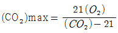
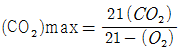
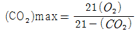
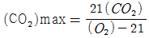
(정답률: 81%)
19. 연소반응에서 수소와 연소용 산소 및 연소가스(물)의 몰수비(mol) 관계가 옳은 것은?
- 1 : 1 : 1
- 1 : 2 : 1
- 2 : 1 : 2
- 2 : 1 : 3
(정답률: 83%)
20. SOx 에 관한 설명으로 틀린 것은?
- 대기 중에서는 SO2가 SO3로, SO3는 SO2로 다시 변한다.
- 액체연료 연소시 온도가 높을 수록 SO3의 생산량은 적다.
- 대기 중에 존재하는 황화합물 중에서 가장 많은 것은 SO2이다.
- SOx 는 연소 시 직접 생기는 수도 있고, SO2가 산화하여 생기는 수도 있다.
(정답률: 69%)
2과목: 열역학
21. 스로틀링(throttling) 밸브를 이용하여 Joule-thomson 효과를 보고자 한다. 이 때 압력이 감소함에 따라 온도가 감소하는 경우는 Joule-thomson 계수 μ 가 어떤 값을 가질 때인가?
- μ = 0
- μ ＞ 0
- μ ＜ 0
- μ = -1
(정답률: 78%)
22. 다음 과정 중 가역적인 과정이 아닌 것은?
- 마찰로 인한 손실이 없다.
- 작용 물체는 전 과정을 통하여 항상 평형상태에 있다.
- 과정은 이를 조절하는 값을 무한소만큼씩 변화시켜도 역행할 수는 없다.
- 과정은 어느 방향으로나 진행될 수 있다.
(정답률: 67%)
23. 200℃ 의 고온 열원과 30℃ 의 저온 열원사이에서 작동하는 카르노사이클이 하는 일이 10kJ이라면 저온에서 방출되는 열은 얼마인가?
- 10.0kJ
- 15.6kJ
- 17.8kJ
- 27.8kJ
(정답률: 38%)
24. 다음의 4행정 사이클 구성에서 틀린 것은?
- 오토 사이클 : 가역단열압축, 가역정적가열, 가역 단열팽창, 가역정적방열
- 디젤 사이클 : 가역단열압축, 가역정압가열, 가역단열팽창, 가역정압방열
- 스털링 사이클 : 가역등온압축, 가역정적가열, 가역등온팽창, 가역정적방열
- 브레이튼 사이클 : 가역단열압축, 가역정압가열, 가역단열팽창, 가역정압방열
(정답률: 73%)
25. 중간 냉각기를 사용하여 다단압축을 하는 이유로서 다음 중 가장 타당한 것은?
- 공기가 너무 뜨거워지면 위험하기 때문이다.
- 압축기의 일을 적게 할 수 있기 때문이다.
- 압축기의 크기가 제한되어 있기 때문이다.
- 1단 압축을 할 경우 위험하기 때문이다.
(정답률: 77%)
26. 기체 동력 사이클과 가장 거리가 먼 것은?
- 증기원동소
- 가스터빈
- 불꽃점화 자동차기관
- 디젤기관
(정답률: 60%)
27. 이상기체의 단위 질량당 내부에너지 u, 엔탈피 h, 엔트로피 s 에 관한 다음의 관계식 중에서 모두 옳은 것은? (단, T 는 절대온도, p 는 압력, v 는 비체적을 나타낸다.)
- Tds = du - vdp, Tds = dh - pdv
- Tds = du + pdv, Tds = dh - vdp
- Tds = du - vdp, Tds = dh + pdv
- Tds = du + pdv, Tds = dh + vdp
(정답률: 69%)
28. 다음은 열역학적 사이클에서 일어나는 여러 가지의 과정이다. 이상적인 카르노(Carnot) 사이클에서 일어나는 과정을 옳게 나열한 것은?
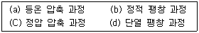
- (a), (b)
- (b), (C)
- (C), (d)
- (a), (d)
(정답률: 79%)
29. 증기동력사이클의 효율을 높이기 위하여 취하는 조치 중 가장 거리가 먼 것은?
- 작동유체의 순환량을 증가시킨다.
- 고온 측의 압력을 높인다.
- 고온측과 저온측의 온도차를 크게 한다.
- 필요에 따라서는 2유체 사이클로 한다.
(정답률: 43%)
30. 아음속 유동에서 유체가 가속되려면 노즐 단면적은 유동방향에 따라 어떻게 되어야 하는가?
- 감소되어야 한다.
- 변화없이 유지되어야 한다.
- 커져야 한다.
- 단면적과는 무관하다.
(정답률: 66%)
31. 다음 중 물의 증발잠열에 관한 사항은?
- 포화압력이 낮으면 증가한다.
- 포화압력이 높으면 증가한다.
- 포화온도가 높으면 증가한다.
- 온도와 압력에 무관하다.
(정답률: 62%)
32. 냉장고가 저온에서 400kcal/h 의 열을 흡수하고, 고온체에 560kcal/h 로 열을 방출한다. 이 냉장고의 성능계수는?
- 0.5
- 1.5
- 2.5
- 20
(정답률: 68%)
33. 단열 비가역 변화를 할 때 전체 엔트로피는 어떻게 변하는가?
- 감소한다.
- 증가한다.
- 변화가 없다.
- 주어진 조건으로는 알 수 없다.
(정답률: 57%)
34. 냉동사이클에서 압축기 입구의 냉매 엔탈피가 h1, 응축기 입구의 냉매 엔탈피가 h2, 증발기 입구의 엔탈피가 h3라고 할 때, 냉동사이클의 성능계수는 어떻게 표시되는가?
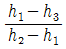
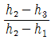
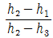
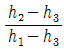
(정답률: 61%)
35. 다음 중 과열수증기 (superheated steam) 의 상태가 아닌 것은?
- 주어진 압력에서 포화증기 온도보다 높은 온도
- 주어진 체적에서 포화증기 압력보다 높은 압력
- 주어진 온도에서 포화증기 체적보다 낮은 체적
- 주어진 온도에서 포화증기 엔탈피보다 큰 엔탈피
(정답률: 71%)
36. 발전소 보일러실에서 소비되는 석탄의 양이 6시간 동안 20톤 이라고 한다. 석탄 1kg 의 연소에 의한 발열량은 29300kJ이다. 석탄에서 얻을 수 있는 열의 20% 가 전기에너지로 변한다고 하면 이 발전소에서 발전되는 전력은 몇 kW 인가?
- 5426
- 10862
- 23220
- 32560
(정답률: 36%)
37. k =1.4 의 공기를 작동유체로 하는 디젤엔진의 최고 온도(T3) 2500K, 최저온도(T1)가 300K, 최고압력(P3)가 4MPa, 최저 압력(P1)이 100kPa 일 때 차단비(cut off ratio : rc)는 얼마인가?
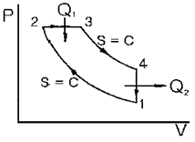
- 2.4
- 2.9
- 3.1
- 3.6
(정답률: 50%)
38. 그림은 랭킨사이클의 온도-엔트로피(T-S)선도이다. h1= 192kJ/kg, h2= 194kJ/kg, h3= 2802kJ/kg, h4= 2010kJ/kg 이라면 열효율은 약 얼마인가?
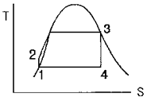
- 25.3%
- 30.3%
- 43.6%
- 49.7%
(정답률: 60%)
39. 카르노사이클을 온도(T)-엔트로피(S) 선도 및 압력(P)-체적(V) 선도로 표시하였을 때, 각 선도의 한 사이클에 대한 적분식들의 관계가 옳은 것은?
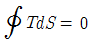
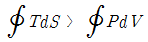
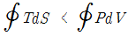
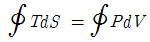
(정답률: 56%)
40. 비열이 일정한 이상기체 1kg이 팽창할때 성립하는 식은? (단, P는 압력, V는 체적, T는 온도, Cp는 정압비열, Cv는 정적비열, U는 내부에너지)
- ∆U = Cp∆T
- ∆U = Cp∆V
- ∆U = Cv∆T
- ∆U = Cv∆P
(정답률: 63%)
3과목: 계측방법
41. 측정하고자 하는 액면을 직접 자로 측정, 자의 눈금을 읽음으로서 액면을 측정하는 방법의 액면계는?
- 검척식 액면계
- 기포식 액면계
- 직관식 액면계
- 플로트식 액면계
(정답률: 82%)
42. 다음 중 가장 높은 온도를 측정할 수 있는 온도계는?
- 저항 온도계
- 광전관 온도계
- 열전대 온도계
- 유리제 온도계
(정답률: 84%)
43. 열전 온도계의 열전대 중 사용 온도가 가장 높은 것은?
- 동 - 콘스탄탄(CC)
- 철 - 콘스탄탄(IC)
- 크로멜 - 알루멜(CA)
- 백금 - 백금로듐(PR)
(정답률: 80%)
44. 제어계가 불안정하여 제어량이 주기적으로 변하는 상태를 무엇이라고 하는가?
- 외란
- 헌팅
- 오버슈트
- 오프셋
(정답률: 79%)
45. 광고온도계의 발신부를 설치할 때 다음 중 어떠한 식이 성립하여야 하는가? ( 단, ℓ : 렌즈로부터 수열판까지의 거리, d : 수열판의 직경, L : 렌지로부터 물체까지의 거리, D : 물체의 직경이다.)
- L/D ＜ ℓ/d
- L/D ＞ ℓ/d
- L/D = ℓ/d
- L/ℓ ＞ d/D
(정답률: 65%)
46. 시즈(sheath)열전대의 특징이 아닌 것은?
- 응답속도가 빠르다.
- 국부적인 온도측정에 적합하다.
- 피측온체의 온도저하 없이 측정할 수 있다.
- 매우 가늘어서 진동이 심한 곳에는 사용할 수 없다.
(정답률: 80%)
47. 다음 중 정상편차에 대한 설명으로 옳은 것은?
- 목표치와 제어량의 차
- 입력의 시간 미분값에 비례하는 편차
- 2개 이상의 양 사이에 어떤 비례관계를 갖는 편차
- 과도응답에 있어서 충분한 시간이 경과하여 제어편차가 일정한 값으로 안정되었을 때의 값
(정답률: 76%)
48. 가스분석계에 대한 설명으로 틀린 것은?
- 미연소가스계는 일산화탄소와 수소 분석에 사용된다.
- 세라믹 산소계는 기전력을 측정하여 산소농도를 측정한다.
- 이산화탄소계는 가스의 상자석을 이용하여 이산화탄소의 농도를 측정한다.
- 적외선가스분석계를 사용하면 일산화탄소와 메탄가스를 분석하는 것이 가능하다.
(정답률: 61%)
49. 전자유량계의 특징이 아닌 것은?
- 유속검출에 지연시간이 없다.
- 유체의 밀도와 점성의 영향을 받는다.
- 유로에 장애물이 없고 압력손실, 이물질 부탁의 염려가 없다
- 다른 물질이 섞여있거나 기포가 있는 액체도 측정이 가능하다
(정답률: 73%)
50. 열전대를 보호하기 위해 사용되는 보호관 중 상용 사용온도가 가장 높으며 급냉, 급열에 강하고 방사고온계의 단망관이나 2중 보호관의 외관으로 주로 사용되는 것은?
- 석영관
- 자기관
- 내열강관
- 카보런덤관
(정답률: 69%)
51. 보일러를 자동 운전할 경우 송풍기가 작동되지 않으면 연료공급 전자 밸브가 열리지 않는 인터록의 종류는?
- 송풍기 인터록
- 불착화 인터록
- 프리퍼지 인터록
- 전자밸브 인터록
(정답률: 75%)
52. 오리피스의 압력을 측정하기 위하여 관지름에 관계없이 오리피스판벽으로부터 상, 하류 25mm 위치에 압력 탭을 설치하는 것은?
- 베나탭
- 베벨탭
- 모서리탭
- 플랜지탭
(정답률: 74%)
53. 압력식 온도계가 아닌 것은?
- 고체팽창식
- 기체팽창식
- 액체팽창식
- 증기팽창식
(정답률: 84%)
54. 레이놀즈수를 나타낸 식으로 옳은 것은? (단, D는 관의 내경, µ는 유체의 점도, ρ는 유체의 밀도, U는 유체의 속도이다.)
- DµU / ρ
- DUρ / µ
- Dµρ / U
- µρU / D
(정답률: 73%)
55. 가스분석 장법 중 CO2의 농도를 측정할 수 없는 방법은?
- 자기법
- 도전율법
- 적외선법
- 열도전율법
(정답률: 53%)
56. 다음 중 응답성이 가장 빠른 온도계는?
- 색 온도계
- 압력식 온도계
- 저항식 온도계
- 바이메탈 온도계
(정답률: 74%)
57. 국소대기압이 740mmHg인 곳에서 게이지압력이 0.4kgf/cm2일 때 절대압력(kgf/cm2)은?
- 1.0
- 1.2
- 1.4
- 1.6
(정답률: 62%)
58. 가스크로마토그래피의 구성요소가 아닌 것은?
- 유량측정기
- 칼럼검출기
- 직류증폭장치
- 캐리어 가스통
(정답률: 70%)
59. 저항온도계에 대한 설명으로 옳은 것은?
- 저항체로서 주로 Fe가 사용된다.
- 저항체는 저항온도계수가 적어야 한다.
- 일정온도에서 일정한 저항을 가져야 한다.
- 일반적으로 온도가 증가함에 따라 금속의 전기저항이 감소하는 현상을 이용한 것이다.
(정답률: 65%)
60. 기체연료의 시험방법 중 CO의 흡수액?
- 발연 황산액
- 수산화칼륨 30% 수용액
- 알칼리성 피로카롤 용액
- 암모니아성 염화 제1동 용액
(정답률: 76%)
4과목: 열설비재료 및 관계법규
61. 파형노통에 대한 설명으로 틀린 것은?
- 강도가 크다.
- 제작비가 비싸다.
- 스케일의 생성이 쉽다.
- 열의 신축에 의한 탄력성이 나쁘다.
(정답률: 75%)
62. 용광로를 고로라고도 하는데 무엇을 제조하는데 사용되는가?
- 주철
- 주강
- 선철
- 포금
(정답률: 82%)
63. 에너지이용합리화법에서 목표에너지원단위란 엇인가?
- 연료의 단위당 제품생산목표량
- 제품의 단위당 에너지사용목표량
- 제품의 생산목표량
- 목표량에 맞는 에너지사용량
(정답률: 81%)
64. 냉난방온도의 제한대상인 건물에 해당하는 것은?
- 연간에너지사용량이 5백티오이 이상인 건물
- 연간에너지사용량이 1천 티오이이상인 건물
- 연간에너지사용량이 1천5백 티오이 이상인 건물
- 연간에너지사용량이 2천 티오이 이상인 건물
(정답률: 84%)
65. 에너지공급자가 제출하여야 할 수요관리 투자계획에 포함 되어야 할 사항이 아닌 것은? ( 단, 그 밖에 수요관리의 촉진을 위하여 필요하다고 인정하는 사항은 제외한다.)
- 장·단기 에너지 수요 전망
- 수요관리의 목표 및 그 달성 방법
- 에너지 연구 개발 내용
- 에너지 절약 잠재량의 추정 내용
(정답률: 73%)
66. 연속식 요가 아닌 것은?
- 등요
- 윤요
- 터널요
- 고리가마
(정답률: 63%)
67. 산성 내화물이 아닌 것은?
- 규석질 내화물
- 납석질 내화물
- 샤모트질 내화물
- 마그네시아 내화물
(정답률: 75%)
68. 중유 소성을 하는 평로에서 축열실의 역할로서 가장 옳은 것은?
- 연소용 공기를 예열한다.
- 연소용 중유를 가열한다.
- 원료를 예열한다.
- 제품을 가열한다.
(정답률: 71%)
69. 국가에너지절약추진위원회에 대한 설명으로 틀린 것은?
- 국무총리실 소속이다.
- 위촉위원의 임기는 3년이다.
- 에너지절약정책의 수립 및 추진에 관한 사항을 심의 한다.
- 위원회는 위원장을 포함하여 25명 이내의 위원으로 구성한다.
(정답률: 70%)
70. 내화물의 부피비중을 바르게 표현한 것은? (단, W1 : 시료의 건조중량 (Kg), W2 : 함수시료의 수중중량 (Kg), W3 : 함수시료의 중량 (Kg)이다.)
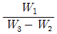
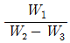
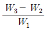
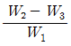
(정답률: 65%)
71. 보온재는 일반적으로 상온(20℃)에서 열전도율이 약 몇 kJ/mhK 인 것을 말하는가?
- 0.04
- 0.4
- 4
- 40
(정답률: 59%)
72. 바이오에너지가 아닌 것은?
- 식물의 유지를 변환시킨 바이오디젤
- 생물유기체를 변환시켜 얻어지는 연료
- 폐기물의 소각열을 변환시킨 고체의 연료
- 쓰레기매립장의 유기성 폐기물을 변환시킨 매립지가스
(정답률: 79%)
73. 열사용기자재에 해당하지 않는 것은?
- 연료를 사용하는 기기
- 열을 사용하는 기기
- 단열성 자재
- 축전식 전기기기
(정답률: 66%)
74. 에너지관련 용어의 정의로 틀린 것은?
- 에너지사용자라 함은 에너지사용시설의 소유자 또는 관리자를 말한다.
- 에너지사용기자재라 함은 열사용기자재나 그 밖에 에너지를 사용하는 기자재를 말한다.
- 에너지공급설비라 함은 에너지를 생산 · 전환 · 수송 · 저장 · 판매하기 위하여 설치하는 설비를 말한다.
- 에너지공급자라 함은 에너지를 생산 · 수입 · 전환 · 수송 · 저장 또는 판매하는 사업자를 말한다.
(정답률: 62%)
75. 전기와 열의 양도체로서 내식성, 굴곡성이 우수하고 내압성도 있어 열교환기의 내관(tube) 및 화학공업용으로 사용되는 관(pipe)은?
- 주철관
- 강관
- 알루미늄관
- 동관
(정답률: 79%)
76. 폴리스틸렌폼의 최고 안전 사용온도(K)는?
- 323
- 343
- 373
- 3230
(정답률: 58%)
77. 밸브의 몸통이 둥근 달걀형 밸브로서 유체의 압력 감소가 크므로 압력이 필요로 하지 않을 경우나 유량 조절용이나 차단용으로 적합한 밸브는?
- 글로브 밸브
- 체크 밸브
- 버터플라이 밸브
- 슬루스 밸브
(정답률: 83%)
78. 배관의 경제적 보온 두께 산정 시 고려대상으로 가장 거리가 먼 것은?
- 열량가격
- 배관공사비
- 감가상각년수
- 연간사용시간
(정답률: 72%)
79. 축요(祝堯)시 가장 중요한 것은 적합한 지반을 고르는 것이다. 다음 중 지반의 적부 결정과 가장 거리가 먼 것은?
- 지내력시험
- 토질시험
- 팽창시험
- 지하탐사
(정답률: 75%)
80. 에너지사용계획을 수립하여 산업통상자원부장관에게 제출하여야 하는 민간사업주관자의 규모는?(오류 신고가 접수된 문제입니다. 반드시 정답과 해설을 확인하시기 바랍니다.)
- 연간 5백만 킬로와트시 이상의 전력을 사용하는 시설
- 연간 1천만 킬로와트시 이상의 전력을 사용하는 시설
- 연간 1천5백만 킬로와트시 이상의 전력을 사용하는 시설
- 연간 2천만 킬로와트시 이상의 전력을 사용하는 시설
(정답률: 81%)
5과목: 열설비설계
81. 전열면적 10m2 를 초과하는 보일러에서의 급수밸브 및 체크밸브는 관의 호칭 지름이 몇 mm이상이어야 하는가?
- 10
- 15
- 20
- 25
(정답률: 53%)
82. 육용강제 보일러에 있어서 접시모양 경판으로 노통을 설치할 경우, 경판의 최소 두께 t (mm)를 구하는 식은? (단, P : 최고 사용압력 (kg/cm2), R : 접시모양 경판의 중앙부에서의 내면 반지름(mm), σa : 재료의 허용 인장응력(kgf/mm2), η : 경판자체의 이음 효율, A : 부식여유(mm))
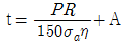
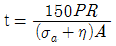
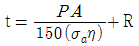
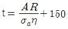
(정답률: 71%)
83. 다음 중 인젝터의 시동순서로 가장 옳은 것은?
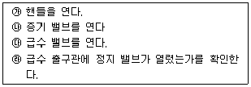
- ㉱ → ㉰ → ㉯ → ㉮
- ㉯ → ㉰ → ㉮ → ㉱
- ㉰ → ㉯ → ㉮ → ㉱
- ㉱ → ㉰ → ㉮ → ㉯
(정답률: 85%)
84. 코르니시 보일러에서 노통은 몇 개인가?
- 1
- 2
- 3
- 4
(정답률: 65%)
85. 파형노통의 특징에 대한 설명으로 옳은 것은?
- 외압에 약하다.
- 전열면적이 좁다.
- 열에 의한 신축에 대하여 탄력성이 적다.
- 내부청소 및 제작이 어렵다.
(정답률: 67%)
86. 보일러의 안전사고의 종류로서 가장 거리가 먼 것은?
- 노통, 수관, 연관 등의 파열 및 균열
- 보일러내의 스케일 부착
- 동체, 노통, 화실의 압궤(collapse) 및 수관, 연관 등 전열면의 팽출(bulge)
- 연도나 노내의 가스폭발, 역화 그 외의 이상연소
(정답률: 84%)
87. 5kg/cm2 · g의 응축수열을 회수하여 재사용하기 위하여 설치한 다음 조건의 Flash Tank 의 재증발 증기량 (kg/h)은 얼마인가?
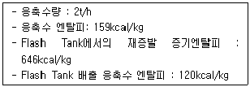
- 26974.3
- 2024.5
- 1851.7
- 148.3
(정답률: 28%)
88. 보일러용 급수 1ℓ를 분석한 결과 탄산칼슘이 2mg이 포함되어 있다. 이 급수의 탄산칼슘(CaCO3) 경도는 몇 PPM인가?
- 0.5PPM
- 2PPM
- 4PPM
- 10PPM
(정답률: 69%)
89. 관의 분해, 조립 시 사용하는 이음장치는?
- 행거
- 플랜지
- 밴드
- 팽창이음
(정답률: 82%)
90. 유류 연소버너의 노즐 압력이 증가하였을 때 발생하는 현상이 아닌 것은?
- 분사각이 명백해진다.
- 유입자가 약간 안쪽으로 가는 현상이 나타난다.
- 유량이 증가한다.
- 유입자가 커진다.
(정답률: 57%)
91. 연관의 바깥지름이 75mm인 연관보일러 관판의 최소두께는 얼마 이상이어야 하는가?
- 8.5mm
- 9.5mm
- 12.5mm
- 13.5mm
(정답률: 58%)
92. 보일러 용수처리법 중 관외처리법(1차) 에 속하지 않는 것은?
- 청관제 투입법
- 탈기법
- 기폭법
- 이온교환법
(정답률: 63%)
93. 24500kw의 증기원동소에 사용하고 있는 석탄의 발열량이 7200kcal/kg이고, 원동소의 열효율을 23%라 하면 매 시간 당 필요한 석탄의 양(t/h)은? (단, 1kw는 860kcal/h로 한다.)
- 10.5
- 12.7
- 15.3
- 18.2
(정답률: 62%)
94. 온수보일러에서의 안전밸브에 대한 설명으로 틀린 것은?
- 안전밸브는 보일러상부에 설치해야 한다.
- 안전밸브는 보일러내부의 관에 연결하여서는 안된다.
- 안전밸브는 중심선을 수직으로 하여 설치해야 한다.
- 안전밸브 연결 시에 나사로 된 연결관을 사용하여서는 안된다.
(정답률: 60%)
95. 감압밸브 설치 시 주의사항에 대한 설명으로 틀린 것은?
- 감압밸브는 부하설비에 가깝게 설치한다.
- 감압밸브는 반드시 스트레이너를 설치한다.
- 감압밸브 1차 측에는 동심 리듀서가 설치되어야 한다.
- 감압밸브 앞에는 기수분리기 또는 스팀트랩에 의해 응축수가 제거되어야 한다.
(정답률: 64%)
96. 전열면적이 50m2 인 연관보일러를 5시간 연소시킨 결과 10000kg의 증기가 발생하였다면 이 보일러의 전열면 증발률은?
- 20kg/m2h
- 30kg/m2h
- 40kg/m2h
- 50kg/m2h
(정답률: 60%)
97. 두께 20mm 강판을 맞대기 용접이음할 때 적당한 끝벌림 형식은?
- V형
- X형
- H형
- 양면 W형
(정답률: 48%)
98. 어느 보일러의 2시간 동안 증발량이 3600kg이고, 증기압이 5kg/cm2, 급수온도는 80℃라고 한다. 이 압력에서 증기의 엔탈피는 640kcal/kg, 급수엔탈피 80kcal/kg 일 때 증발계수는 얼마인가? (단, 물의 잠열은 539kcal/kg 이다.)
- 0.89
- 1.04
- 1.41
- 1.62
(정답률: 51%)
99. 전열요소가 회전하는 재생식 공기예열기는?
- 판형 공기예열기
- 관형 공기예열기
- 융스트롬(Ljungstrom) 공기예열기
- 로테뮬(Rothemuhle) 공기예열기
(정답률: 65%)
100. 보일러 사용 중 이상 감수(저수위사고)의 원인으로 가장 거리가 먼 것은?
- 급수펌프가 고장이 났을 때
- 수면계의 연락관이 막혀 수위를 모를 때
- 증기의 발생량이 많을 때
- 분출장치에서 누설이 될 때
(정답률: 76%)